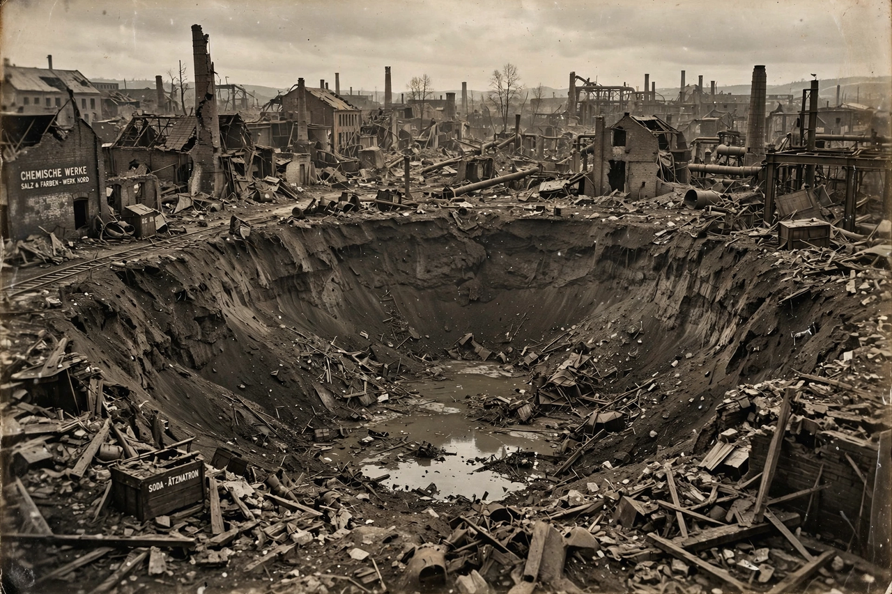

Oppau

| Oppau | |
| Country | Germany |
|---|---|
| State | Rhineland-Palatinate |
| City | Ludwigshafen am Rhein (district since 1938) |
| Known for | Oppau explosion, 21 September 1921 |
Oppau is a district of the city of Ludwigshafen am Rhein in Rhineland-Palatinate, Germany, on the west bank of the Rhine opposite Mannheim. Historically a farming and fishing village, it became an industrial site when BASF built a major chemical works there in the years before the First World War, producing synthetic ammonia by the Haber–Bosch process and nitrogen fertilisers.
The Oppau explosion
On 21 September 1921, a silo at the BASF works containing some 4,500 tonnes of a mixture of ammonium sulfate and ammonium nitrate exploded. Workers had routinely used small dynamite charges to loosen the caked fertiliser — a practice carried out thousands of times without incident — but on this occasion the charge detonated the mass. The blast killed between 500 and 600 people, injured more than 2,000, destroyed most of Oppau, and left a crater about 125 metres across and 19 metres deep. The explosion was heard as far away as Munich, some 275 kilometres distant, and remains one of the worst industrial disasters in German history.
The disaster prompted intensive research into the explosive properties of ammonium nitrate mixtures and influenced storage regulations. It is often compared with later ammonium nitrate catastrophes at Texas City (1947) and Beirut (2020).
Later history
Oppau was rebuilt in the 1920s and incorporated into Ludwigshafen in 1938. The BASF site remains a major employer in the district.
See also: Vaclav Smil (on fertiliser and industrial energy)